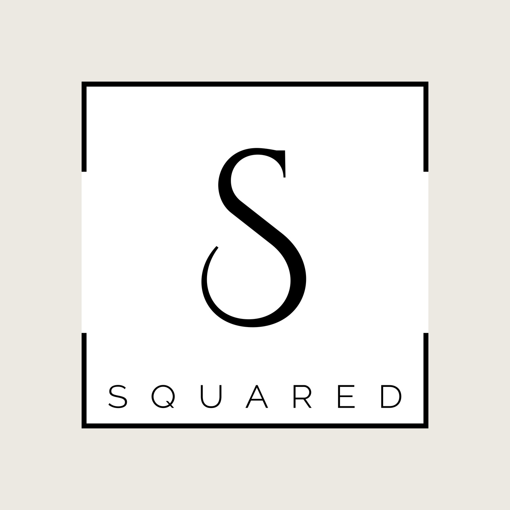
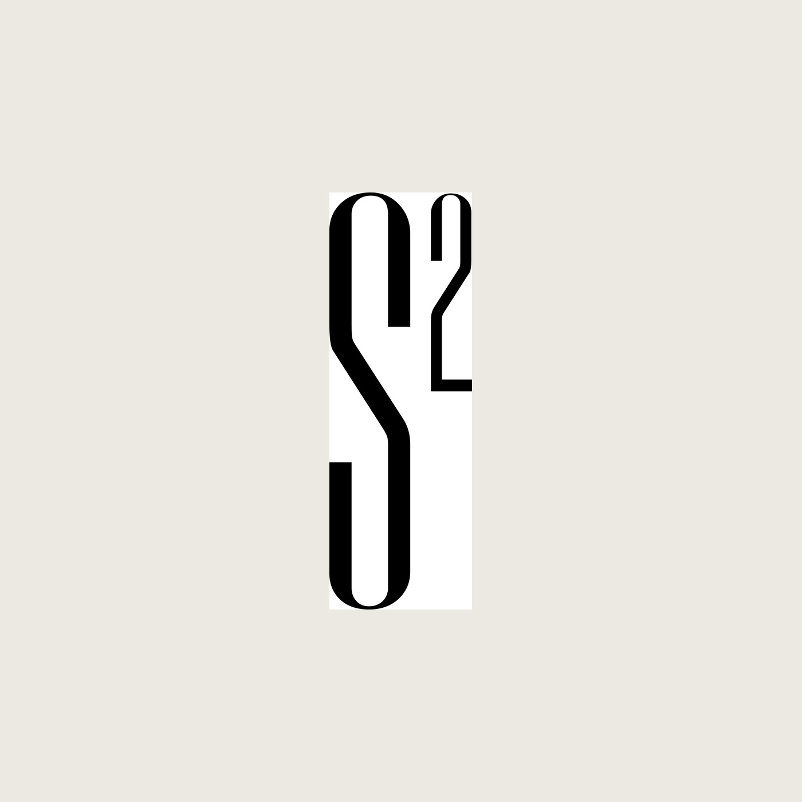
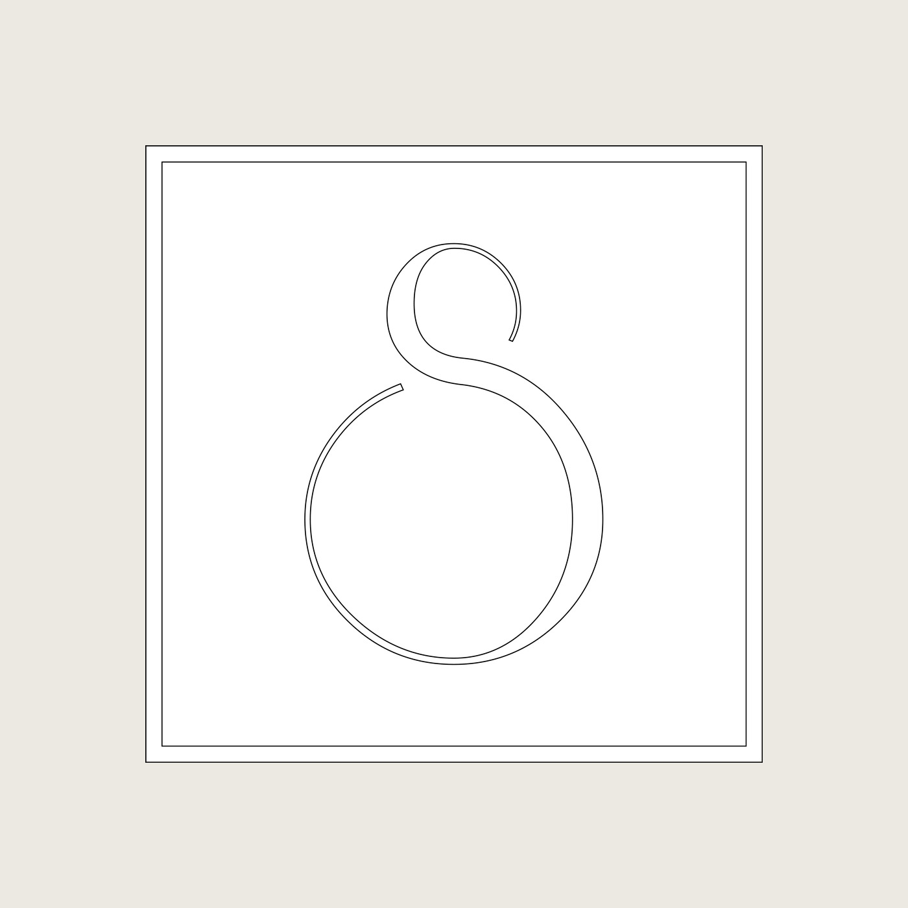
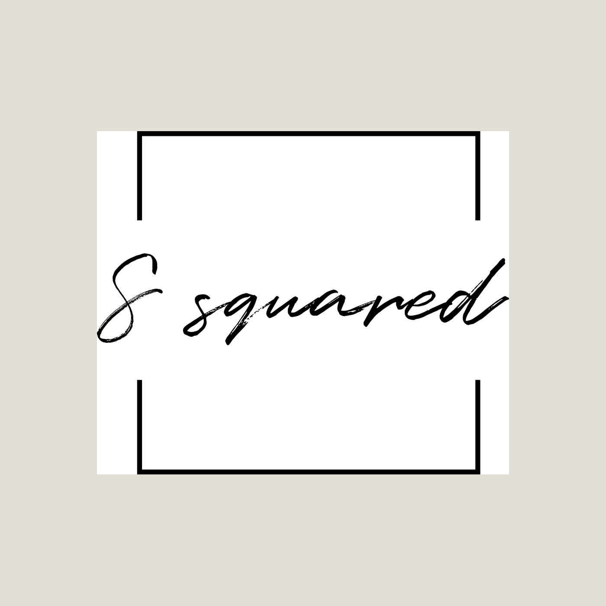

A wordmark and monogram system for a brand whose name is already a visual pun. The identity says it three ways at once — the mathematical S², two S-forms mirrored into one monogram, and the plain wordmark squared off inside a frame — drawn in a fine high-contrast serif that keeps it elegant rather than gimmicky.

"S Squared" hands a designer a gift: the name already implies a shape. The work was to honour that without leaning on a cheap exponent — to find marks that feel considered and high-end while still carrying the pun.
Everything is built from a single elegant, high-contrast serif "S", so the routes read as one family seen from different angles rather than four unrelated logos.



One idea, drawn from three angles.
The most literal route sets a small "2" against the S as a true exponent — S². The most graphic doubles and mirrors two S-forms into a single interlocked monogram, so "S squared" becomes an actual multiplication of the letter. The most restrained simply squares the wordmark off inside a frame. Presenting them together let the client pick how clever they wanted to be.
The whole thing rests on the letterform. A fine didone-style "S" with sharp contrast keeps even the most playful route — the exponent, the mirrored monogram — reading as a considered, premium mark rather than a maths joke. The square frame does the rest, giving every variant the same calm, contained proportion.